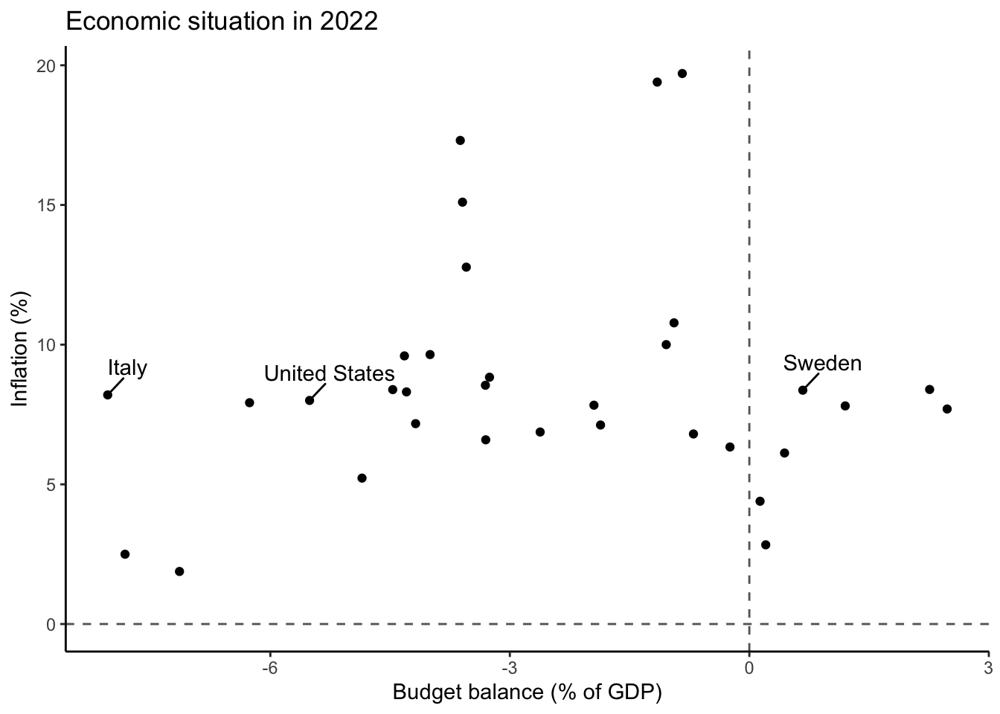
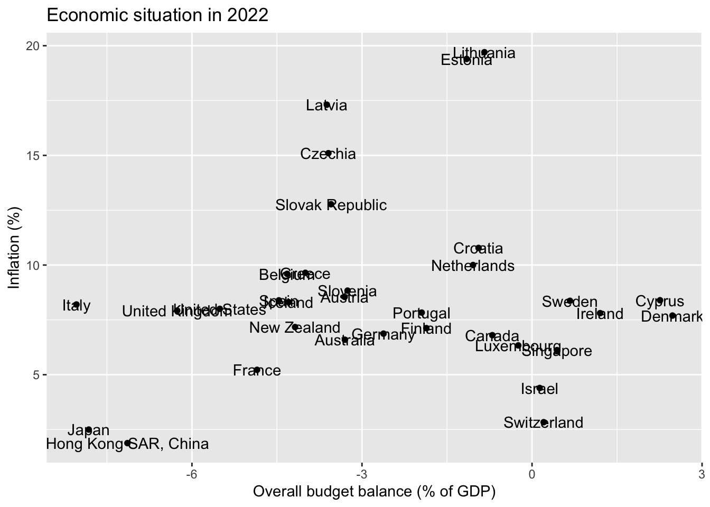
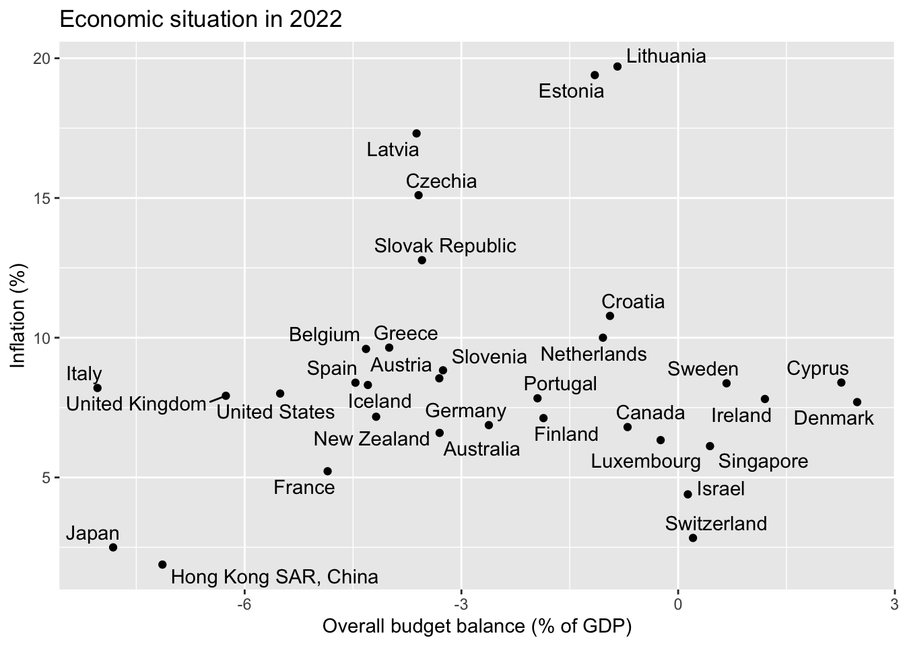
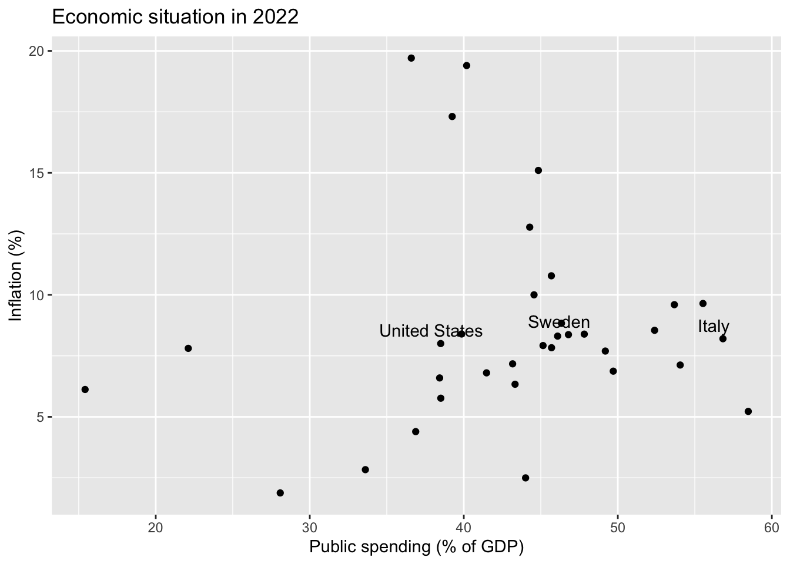

A frequent tradeoff can be thought of as truthfulness vs. simplicity.
In other words, you will need to balance:
Readability vs. “completeness”
Conciseness vs. an “attention-gabbing” potential
Simplicity vs. other goals
If you drop outliers, for example, your chart’s readability will almost surely improve. But it could be less truthful.
1.2 Questions to ask yourself
What chart type is appropriate for my situation?
Can I try a few options?
And is this a case where a (simple!) table would be more effective to communicate what you found?
Did I spend at least a few minutes making some thoughtful design choice (amount of text, labels, annotations; color choice; font size) so that my chart is clear and reasonably self-contained?
How much data would you want to display? …to convey your findings clearly & credibly?
How much data is necessary?
…to convince yourself that your story is truthful?
1.3 Back to readability vs. “completeness”
If you label a subset of your observations, then arguably some information “is lost”, unless you post your data.
Load the data
library(tidyverse)# Get fiscal dataimf <-read_csv("data_macro/imf-fiscalmonitor-apr2023.csv")# Reformat data to wide and keep only the latest yearimf_wide2022 <- imf %>%select(variable,country,`2022`) %>%pivot_wider(names_from = variable, values_from =`2022`)# Merge in inflation data:inf <-read_csv("data_macro/inflation_WDI.csv")inf2022 <- inf %>%filter(year==2022)econ2022 <-left_join(imf_wide2022,inf2022,by="country")
You may agree that you should almost ever make graphs that look like this:
When you can make charts like this instead:

The code for both charts is shown below. Notice something?
# A tibble: 36 × 2
`Overall Balance` country
<dbl> <chr>
1 22.4 Norway
2 2.48 Denmark
3 2.26 Cyprus
4 1.20 Ireland
5 0.670 Sweden
6 0.441 Singapore
7 0.206 Switzerland
8 0.134 Israel
9 -0.242 Luxembourg
10 -0.700 Canada
# ℹ 26 more rows
1.4 Example: Making scatterplots better
Starting in 2021, inflation increased in many countries and became a source of serious concern for citizens and politicians. One set of substantive debates dealt with this set of questions: should governments be blamed for excessive spending (and borrowing)? Were fiscal decisions responsible for inflation? Here, we’ll deal with one potential approach to designing visual exhibits which might faciliate some international comparisons.1
Let’s get some data (available via the Github repo)
If we wanted each row to correspond to one country-year observation, we would run this snippet:
imf %>%pivot_longer(cols=`2014`:`2023`,names_to ='year') # this part is not necessary but it's useful
# A tibble: 1,080 × 4
variable country year value
<chr> <chr> <chr> <dbl>
1 General Government Expenditure Australia 2014 36.9
2 General Government Expenditure Australia 2015 37.4
3 General Government Expenditure Australia 2016 37.4
4 General Government Expenditure Australia 2017 36.9
5 General Government Expenditure Australia 2018 37.0
6 General Government Expenditure Australia 2019 39.1
7 General Government Expenditure Australia 2020 44.6
8 General Government Expenditure Australia 2021 42.2
9 General Government Expenditure Australia 2022 38.4
10 General Government Expenditure Australia 2023 39.0
# ℹ 1,070 more rows
But we’ll focus here on year 2022, so let’s simply create 3 informative columns:
# Reformat data to wide and keep only the latest yearimf_wide2022 <- imf %>%select(variable,country,`2022`) %>%pivot_wider(names_from = variable, values_from =`2022`)
imf_wide2022
# A tibble: 36 × 4
country General Government Expendit…¹ `Overall Balance` `Gross public debt`
<chr> <dbl> <dbl> <dbl>
1 Australia 38.4 -3.30 55.7
2 Austria 52.4 -3.31 77.8
3 Belgium 53.7 -4.32 105.
4 Canada 41.5 -0.700 107.
5 Croatia 45.7 -0.943 67.5
6 Cyprus 39.9 2.26 86.5
7 Czechia 44.8 -3.59 42.3
8 Denmark 49.2 2.48 29.7
9 Estonia 40.2 -1.15 17.2
10 Finland 54.0 -1.86 74.8
# ℹ 26 more rows
# ℹ abbreviated name: ¹`General Government Expenditure`
Finally, we want to add inflation data to our fiscal data:
# Merge in inflation data:inf <-read_csv("data_macro/inflation_WDI.csv")inf2022 <- inf %>%filter(year==2022)econ2022 <-left_join(imf_wide2022,inf2022,by="country")
So we will work with the econ2022 data object for a moment.
This chart displays the relationship between public budget deficits and inflation.
# Make a simple plot:econ2022 %>%filter(country !="Norway") %>%ggplot(aes(y=inflation,x=`Overall Balance`,label=country)) +geom_point() +geom_text() +labs(title ="Economic situation in 2022",x="Overall budget balance (% of GDP)", y="Inflation (%)")

A few things to notice:
We are not displaying Norway (can you check why?)
We added an informative title to the scatterplot
We made the questionable choice to use geom_text() which uses what we placed inside aes(... label=country).
The same data can be displayed this way; ggrepel::geom_text_repel() is helpful in this context:
econ2022 %>%filter(country !="Norway") %>%ggplot(aes(y=inflation,x=`Overall Balance`,label=country)) +geom_point() + ggrepel::geom_text_repel() +labs(title ="Economic situation in 2022",x="Overall budget balance (% of GDP)", y="Inflation (%)")

Or you can highlight a subset of subset of observations relevant for your analysis.
Let’s create a vector of country names:
subset <-c("Italy","Sweden","United States")
We’ll want to insert data=econ2022 %>% filter(country %in% subset) into geom_text_repel:
Note also that I also that it could have been tempting to label the x-axis as showing “Public deficit” because we almost always talk about deficits. But that would have been misleading, given that only negative values on the x-axis would have denoted the deficit.
We see that deficit spending is not informative: moderately high inflation was common across OECD countries; neither large deficits, nor budget surpluses, were prognostic of better/worse outcomes.
1.4.1 Total government spending and (contemporaneous) inflation
What about total government spending? We can check:
econ2022 %>%ggplot(aes(y=inflation,x=`General Government Expenditure`)) +geom_point() + ggrepel::geom_text_repel(data=econ2022 %>%filter(country %in%c("Italy","Sweden","United States")),aes(label=country),nudge_y=.5,nudge_x=-.5) +labs(title ="Economic situation in 2022",x="Public spending (% of GDP)", y="Inflation (%)")

This would seem to suggest that higher (government) spending is not necessarily associate with faster price growth.
To be sure, a more careful analysis here would require looking it changes in government expenditures.
1.5 Inflation magnitudes
Here a few ways to show how sharply inflation increased between 2021 in 2022 in most OECD countries:
Above we simply added a geom_line(aes(group=country),color="grey50") and made sure that the line was plotted before the points were added for each country (for aesthetic reasons).
replaced geom_point() with geom_col(position = position_dodge())
1.6 Exercise: Inflation and government spending
Use the provided datasets to explore whether an increase in government spending predicts (current or future) inflation.
Consider the following issues and provide brief justifications:
Let the focal year of interest be T = 2022. Is it sensible to compare T with T-1? What if the fiscal effect materializes with a lag? And would it be appropriate to compare current spending to pre-pandemic spending?
Should past spending be subtracted from “current” spending at time T? If your answer is yes, remember that you would be reporting differences expressed in percentage points. (Don’t slip, using the symbol “%” would be misleading…)
But also remember that evidence of this kind can inform factual debates but it wouldn’t settle the debate.↩︎